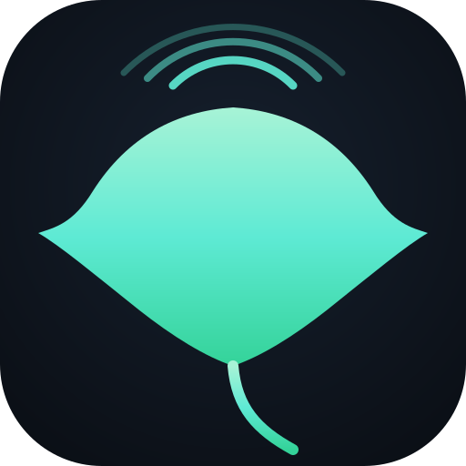

android-call-audio-injection
mobile / AI security researchinvestigación seguridad móvil / IA
Security research on a rooted Moto G 2023: demonstrated that Android's app ↔ call-audio isolation can be bypassed via an undocumented Qualcomm routing path, letting software inject audio (e.g. AI TTS) into a live cellular call's uplink — confirmed by a remote listener. Published as a defensive write-up: threat model, blue-team analysis, and responsible-disclosure rationale — the weaponizable PoC is withheld by design. Grew from a benign use case (an assistant placing spoken alert/reminder calls to my own phone) into a finding about the mobile attack surface for AI voice agents.Investigación de seguridad en un Moto G 2023 con root: demostré que el aislamiento entre audio de apps y audio de llamada en Android puede eludirse mediante una ruta no documentada de Qualcomm, permitiendo inyectar audio (p. ej. TTS de IA) en el enlace de subida de una llamada celular activa — confirmado por un oyente remoto. Publicado como análisis defensivo: modelo de amenazas, análisis blue-team y justificación de divulgación responsable — el PoC explotable se omite a propósito. Surgió de un uso benigno (un asistente que coloca llamadas de alerta/recordatorio a mi propio teléfono) hacia un hallazgo sobre la superficie de ataque móvil de los agentes de voz con IA.
Android internalsQualcomm audio / ADSPreverse engineeringAI / TTSmobile securityresponsible disclosure
View on GitHub ↗Ver en GitHub ↗

stingray-detector
A passive, receive-only toolkit for detecting IMSI catchers / cell-site simulators ("Stingrays")
with an SDR — combining cell-topology heuristics (duplicate coverage, power & appearance anomalies)
with GSM physical-layer analysis of recorded IQ to flag rogue base stations.Un kit pasivo, de solo recepción, para detectar IMSI-catchers / simuladores de celdas («Stingrays»)
con un SDR — combinando heurísticas de topología celular (cobertura duplicada, anomalías de potencia
y de aparición) con análisis de capa física GSM sobre IQ grabado para señalar estaciones base maliciosas.
PythonNumPySDR / HackRFLTE / GSMsrsRAN
View on GitHub ↗Ver en GitHub ↗
yaris-xp90-repair
automotive / CANautomotriz / CAN

A repair knowledge base + read-only Python OBD-II / CAN-bus diagnostics toolkit
for the Toyota Yaris over a cheap ELM327 — ISO-TP frame reassembly, manufacturer enhanced-mode
(service 0x21) discovery, live data, and fuel-trim/MAF analysis. Includes a from-scratch guide so
others can build diagnostics for their own vehicle.Una base de conocimiento de reparación + un kit de diagnóstico OBD-II / CAN-bus en Python
(solo lectura) para el Toyota Yaris con un ELM327 económico — reensamblaje de tramas ISO-TP, descubrimiento
del modo extendido del fabricante (servicio 0x21), datos en vivo y análisis de fuel-trim/MAF. Incluye una
guía desde cero para que otros construyan diagnósticos para su propio vehículo.
PythonOBD-IICAN busELM327pyserialreverse engineering
View on GitHub ↗Ver en GitHub ↗
choicemmed-md300cn358r
BLE / healthBLE / salud

A passive Bluetooth Low Energy toolkit for the Choicemmed MD300CN358R fingertip
pulse oximeter — reverse-engineered the GATT protocol to stream SpO₂, heart rate, perfusion index and the
raw PPG waveform with no vendor app, plus a local Flask dashboard and an offline
HRV analysis pipeline (RMSSD / SDNN / pNN50). Ships synthetic sample data so it runs
with no hardware.Un kit Bluetooth Low Energy pasivo para el oxímetro de pulso de dedo Choicemmed MD300CN358R —
ingeniería inversa del protocolo GATT para transmitir SpO₂, frecuencia cardíaca, índice de perfusión y la onda
PPG cruda sin la app del fabricante, con un panel local en Flask y un pipeline offline de
análisis de HRV (RMSSD / SDNN / pNN50). Incluye datos sintéticos para correr sin hardware.
PythonBLE / bleakNumPy / SciPyFlaskHRV / DSPreverse engineering
View on GitHub ↗Ver en GitHub ↗
Self-Hosted Security LabLaboratorio de Seguridad Autohospedado
home lablaboratorio
A production-style lab I built and run to sharpen blue-team skills: hypervisor virtualization,
a segmented firewall with VLANs, a SIEM for log collection and alerting, self-hosted internal
services, and an isolated sandbox for safe malware detonation and analysis.Un laboratorio estilo producción que construí y opero para afinar habilidades de blue team: virtualización
con hipervisor, un firewall segmentado con VLANs, un SIEM para recolección de registros y alertas,
servicios internos autohospedados y un sandbox aislado para detonar y analizar malware de forma segura.
ProxmoxpfSense / OPNsenseWazuh SIEMELK StackVLAN segmentationFlareVMDocker
SecurityScripts
open sourcecódigo abierto
A small open-source repo of Windows incident-response utilities — e.g., extracting the SAM
credential hive for offline analysis.Un pequeño repositorio de código abierto con utilidades de respuesta a incidentes en Windows — p. ej.,
extracción del registro de credenciales SAM para análisis offline.
BatchWindows IR
View on GitHub ↗Ver en GitHub ↗
Exam-Prep Study AppsApps de Estudio para Certificaciones
toolingherramientas
Self-built, offline, dependency-free study applications for security certifications
(Security+, AI-security) — weighted practice exams, flashcards, and notes. Demonstrates
curriculum design and front-end build skills.Aplicaciones de estudio propias, sin conexión y sin dependencias, para certificaciones de seguridad
(Security+, seguridad de IA) — exámenes de práctica ponderados, tarjetas de memoria y notas. Demuestran
diseño curricular y habilidades de desarrollo front-end.
JavaScriptHTML / CSSPython
This Résumé SiteEste Sitio de Currículum
web
A self-contained, dependency-free single-page site (no framework, no build step) deployed on
GitHub Pages — the page you're reading.Un sitio de una sola página, autocontenido y sin dependencias (sin framework ni paso de build),
desplegado en GitHub Pages — la página que estás leyendo.
Vanilla JSResponsiveGitHub Pages
View source ↗Ver código ↗